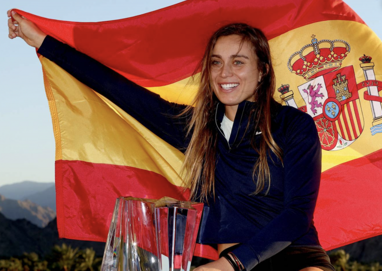

El cómico y presentador David Broncano está de enhorabuena. Tal y como informaba el diario La Razón esta mañana, la tenista Paula Badosa se ha convertido en la primera ex de la estrella de La Resistencia en ganar Indian Wells. «Aún sigo en shock. No pensé que fuera a lograrlo y, sin duda, me da ánimos para el futuro. Espero poder salir pronto con la próxima ganadora del Abierto de Australia o, puestos a soñar, del Roland Garros. Pero bueno, hay que ir pareja a pareja… primero hay que empezar algo y luego romper, que no es fácil. Hoy toca celebrar», declaraba esta mañana Broncano.
